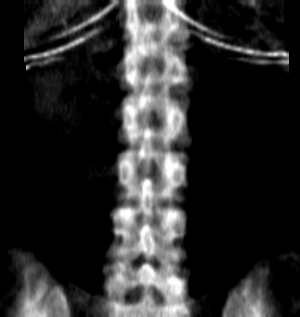

Структура — вариант А, он остаётся. Меняем две вещи, чтобы уйти от ЕМИАС: оттенок (там ярко-синий) и приём выделения заголовка (там его нет вовсе — карточка опознаётся по бледно-голубой плитке под иконкой, ровно как было у нас). Щёлкайте комбинации.
Слева — ожидание снимка с аппарата. Справа — режим загрузки в той же подаче. Ниже тот же блок со сплошной рамкой вместо пунктира: пунктир говорит «сюда можно перетащить», сплошная — «это панель». Оттенок кнопки меняется вместе с выбранным.
Экран обновится сам через 2–3 секунды после сканирования.
Загружать ничего не нужно.
Перетащите файл исследования в это окно
или выберите его на диске.
Сплошная рамка вместо пунктира,
строже и спокойнее.
Главный экран системы: вердикт, критерии с пояснением и решение. Единственная плашка, которая приподнята над фоном, — но подъём мягкий, без прежнего объёма. Переключатель «Вердикт» наверху меняет шапку: тонированная или залитая цветом.

Поясничный отдел позвоночника — гребни подвздошных костей, посторонние предметы
Гребень слева не попал в кадр. Сместите зону сканирования ниже, чтобы верхние края подвздошных костей были видны, и повторите снимок.
Мелкие элементы в выбранном оттенке: кнопки, значки вердикта, зоны исследования, поля, шаги обработки, строка очереди, уведомления, пустое состояние. По ним переносим стиль на остальные экраны.